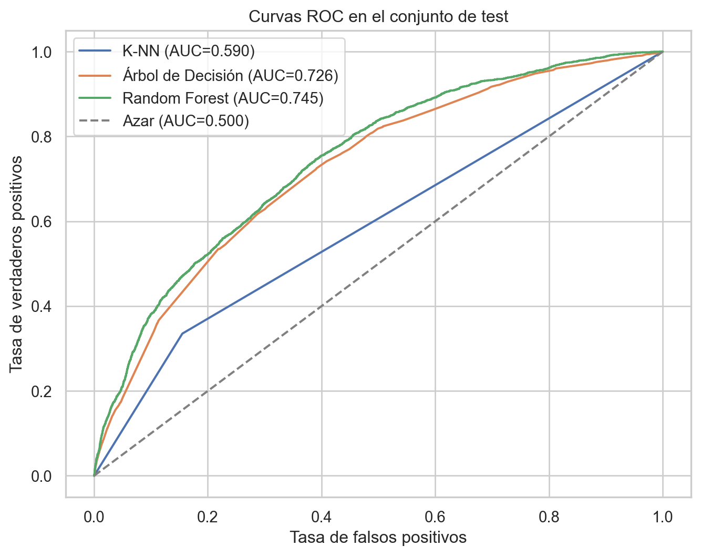
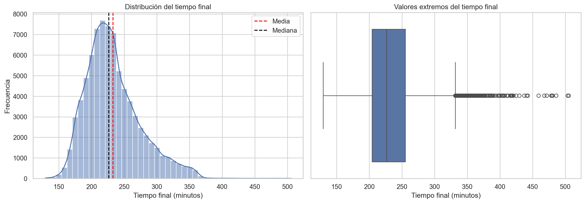
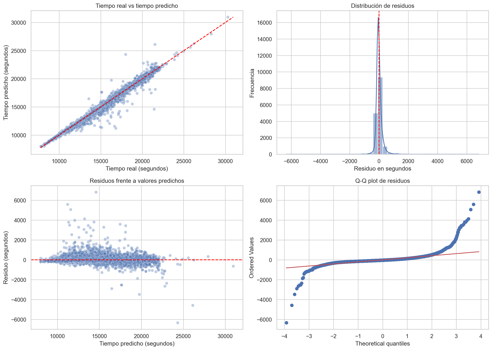

Este capítulo se divide en dos problemas distintos:
Problema de clasificación: Predecir si los corredores “petan” o no en el muro a través de la variable creada en el análisis exploratorio.
Problema de regresión: Predecir el tiempo final de los atletas al paso por los 35km. Cabe destacar que en la asignatura de Análisis de Datos en el Deporte se realizó un estudio con modelos de regresión y se observó que el parcial que mejores predicciones obtenía era el 35, por lo tanto, ahora vamos a probar varios modelos sobre este parcial para determinar cuál es mejor.
Ver código
import pandas as pdimport numpy as npimport matplotlib.pyplot as pltimport seaborn as sns# Configuración visualsns.set_theme(style="whitegrid")plt.rcParams['figure.figsize'] = (10, 6)from sklearn.model_selection import train_test_splitfrom sklearn.preprocessing import StandardScalerfrom sklearn.neighbors import KNeighborsClassifierfrom sklearn.tree import DecisionTreeClassifierfrom sklearn.ensemble import RandomForestClassifierfrom sklearn.linear_model import LinearRegression, Ridge, Lasso from sklearn.tree import DecisionTreeRegressorimport xgboost as xgb from sklearn.metrics import accuracy_score, recall_scorefrom sklearn.metrics import classification_report, confusion_matrix from sklearn.metrics import roc_auc_score, roc_curvefrom sklearn.metrics import mean_absolute_error, mean_squared_error, r2_scorefrom scipy import statsdf_boston = pd.read_parquet("../data/processed/boston_post_eda.parquet")
5.1 Problema de clasificación. Detección de atletas que sufren en el muro.
Para comenzar esta sección, vamos a realizar la división de nuestro conjunto de datos en Train-Test-Validation.
Para ello, la mejor opción será realizar un muestreo estratificado ya que hay un 79.78% de corredores que no chocan con el muro hit_the_wall=0.
A continuación, se hace el muestreo estratificado en una proporción 60-20-20 para cada conjunto. Además, se dejan en X las variables predictoras que pueden llegar a usarse (age, gender, country_residence, 5k, 10k, 15k, 20k, half, temp_mean_c, humidity_pct, wind_speed_kmh).
Ver código
features_todas = ['age', 'gender', 'country_residence', '5k', '10k', '15k', '20k', 'half', 'temp_mean_c', 'humidity_pct', 'wind_speed_kmh']target ='hit_the_wall'X = df_boston[features_todas]y = df_boston[target]# 3. DIVISIÓN ESTRATIFICADA (60/20/20)# 60% Train / 40% RestoX_train, X_temp, y_train, y_temp = train_test_split( X, y, test_size=0.40, random_state=42, stratify=y)# Mitad del resto para Validación (20%) y mitad para Test (20%)X_val, X_test, y_val, y_test = train_test_split( X_temp, y_temp, test_size=0.50, random_state=42, stratify=y_temp)
Una vez tenemos nuestros datos ya divididos, entrenaremos nuestros modelos en Train, los evaluaremos en Test y cuando tengamos todos los posibles modelos, elegiremos uno para probarlo en Validation.
Cabe destacar que evaluaremos el rendimiento de dichos modelos a través de las métricas:
Recall: Ya que decirle a un atleta que no va a golpearse contra el muro cuando en realidad sí es un error que puede costar muy caro, nuestro objetivo será maximizar dicha métrica, es decir, de todos los positivos reales, ¿cuántos caza el modelo? \(Recall = \frac{TP}{TP + FN}\)
Donde TP son los corredores que realmente chocan con el muro y el modelo detecta correctamente, y FN son los corredores que chocan con el muro pero el modelo no identifica. En este problema, reducir los FN es especialmente importante.
5.1.1 K-Vecinos Más Cercanos (K-NN)
El algoritmo de K-Vecinos Más Cercanos (K-NN) es un método de aprendizaje supervisado no paramétrico. A diferencia de otros algoritmos que construyen una ecuación matemática o un árbol de reglas durante el entrenamiento, K-NN es un algoritmo de tipo lazy learning (aprendizaje perezoso): no “aprende” un modelo en sí, sino que memoriza todo el conjunto de datos de entrenamiento para usarlo como mapa de referencia durante la predicción.
5.1.1.1 Fundamento del Algoritmo
Para clasificar a un nuevo corredor (es decir, predecir si sufrirá “El Muro” o no), el algoritmo sigue un proceso estrictamente geométrico:
Cálculo de Distancias: Mide la distancia matemática entre el nuevo corredor y todos los demás corredores presentes en el conjunto de entrenamiento. La métrica por defecto es la Distancia Euclidiana en un espacio n-dimensional: \[d(x, y) = \sqrt{\sum_{i=1}^{n} (x_i - y_i)^2}\]
Selección de la Vecindad (K): Identifica a los \(K\) corredores del conjunto de entrenamiento que se encuentran a menor distancia del nuevo individuo. El valor \(K\) es un hiperparámetro crítico que se debe definir (generalmente un número impar para evitar empates, como 3, 5 o 7).
Votación Mayoritaria: El algoritmo observa la etiqueta real (hit_the_wall) de esos \(K\) vecinos más cercanos. La clase mayoritaria entre ellos será la predicción asignada al nuevo corredor.
5.1.1.2 Aplicación del Algoritmo
Una vez definido el marco teórico, aplicamos el algoritmo:
Ver código
#1. Definimos las variables que vamos a usar: variables_usar = ['age', '5k', '10k', '15k', '20k', 'half', 'temp_mean_c', 'humidity_pct', 'wind_speed_kmh']X_train_knn = X_train[variables_usar]X_test_knn = X_test[variables_usar]X_validation_knn = X_val[variables_usar]#2. Las escalamosscaler = StandardScaler()X_train_knn = scaler.fit_transform(X_train_knn)X_test_knn = scaler.transform(X_test_knn)X_validation_knn = scaler.transform(X_validation_knn)#3. Entrenamos el algoritmomodelo_clasificacion_knn = KNeighborsClassifier(n_neighbors=1)modelo_clasificacion_knn.fit(X_train_knn, y_train)#4. Realizamos la predicción en testpredicciones_knn = modelo_clasificacion_knn.predict(X_test_knn)#5. Visualizamos la matriz de confusióntabla_confusion = pd.crosstab( y_test, predicciones_knn, rownames=['Realidad (0=No, 1=Sí)'], colnames=['Predicción (0=No, 1=Sí)'])acc_knn = accuracy_score(y_test, predicciones_knn)rec_knn = recall_score(y_test, predicciones_knn, pos_label=1)print("=== MATRIZ DE CONFUSIÓN (K-NN) ===\n")print(tabla_confusion)print("=== EVALUACIÓN DEL MODELO KNN ===")print(f"Accuracy Global: {acc_knn:.2%}")print(f"Recall (Detección del Muro): {rec_knn:.2%}")
Comenzamos estableciendo un modelo base utilizando K-NN. Como era de esperar ante un dataset desbalanceado (80/20), el algoritmo basado en distancias fue incapaz de identificar los colapsos, logrando un Recall máximo del 33% asumiendo un riesgo extremo de sobreajuste (\(K=1\)). Esto justifica la necesidad de evolucionar hacia algoritmos basados en árboles que permitan un balanceo de pesos matemático.
5.1.2 Árbol de Decisión
El Árbol de Decisión (Decision Tree) es un algoritmo de aprendizaje supervisado no paramétrico que construye un modelo predictivo basado en una secuencia jerárquica de reglas lógicas. A diferencia de métodos basados en distancias (como K-NN) o en ecuaciones algebraicas (como la Regresión Lineal), el árbol divide el conjunto de datos iterativamente realizando preguntas binarias sobre las variables predictoras.
5.1.2.1 Funcionamiento y Criterio de Corte
En cada nodo, el algoritmo evalúa todas las características disponibles (edad, ritmos, país, etc.) y selecciona el punto de corte que mejor separa a los corredores según la variable objetivo (hit_the_wall). Para medir la calidad de esta separación, utiliza métricas matemáticas de “pureza”, siendo la más común el Índice de Impureza de Gini. El proceso se ramifica de forma descendente hasta alcanzar un criterio de parada definido por el analista (por ejemplo, una profundidad máxima, max_depth) para evitar el sobreajuste (overfitting).
5.1.2.2 Índice de Gini, Entropía y Error de Clasificación
Cuando un árbol prueba una posible división, no mira solo si acierta o falla en ese instante. Lo que intenta medir es si, después del corte, los nodos resultantes quedan más “puros”, es decir, con observaciones cada vez más concentradas en una única clase. Para ello se utilizan medidas de impureza.
Si en un nodo hay \(K\) clases y \(p_k\) representa la proporción de observaciones de la clase \(k\), el índice de Gini se calcula como:
\[Gini = 1 - \sum_{k=1}^{K} p_k^2\]
Un nodo completamente puro tiene Gini igual a 0, porque todas las observaciones pertenecen a la misma clase. En cambio, si en un problema binario el nodo está dividido al 50%-50%, la impureza es alta, porque el árbol todavía no ha conseguido separar bien las clases.
La entropía mide una idea muy parecida, pero desde el punto de vista de la información o incertidumbre:
\[Entropia = - \sum_{k=1}^{K} p_k \log_2(p_k)\]
También vale 0 en nodos puros y aumenta cuando las clases están mezcladas. En la práctica, Gini y entropía suelen producir árboles bastante similares. Gini es algo más simple de calcular y es el criterio por defecto en muchos árboles de clasificación; la entropía penaliza de forma algo más intensa ciertos nodos con mezcla de clases y se interpreta como ganancia de información.
Otra posibilidad sería usar el error de clasificación:
\[Error = 1 - \max(p_k)\]
Este indicador mira únicamente la clase mayoritaria del nodo. Por ejemplo, si un nodo tiene 60% de corredores que no chocan con el muro y 40% que sí chocan, su error sería 40%. El problema es que esta medida es menos sensible a pequeñas mejoras en la composición del nodo. Por eso suele ser menos útil para decidir los cortes durante el crecimiento del árbol, aunque puede ser intuitiva para explicar el error final de clasificación.
En este trabajo utilizamos criterion='gini' porque es un criterio robusto, eficiente y adecuado para construir árboles de clasificación. Además, combinado con class_weight='balanced', permite que el árbol no ignore la clase minoritaria (hit_the_wall=1) durante el aprendizaje.
5.1.2.3 Aplicación del Algoritmo
A continuación, se realiza el algoritmo. La idea será coger las variables categóricas como el país y binarizarlas, en vez de dejar todos los posibles países, ya que son muchos. De esta manera, logramos una regla lógica de si el corredor es o no de los estados unidos. Tras ello, entrenamos el algoritmo:
Este modelo, en comparación con el anterior, tiene mucha más Recall pero menos Accuracy.
La preparación de variables del árbol se ha mantenido sencilla e interpretable:
age, los parciales hasta la media maratón (5k, 10k, 15k, 20k, half) y las variables meteorológicas se usan directamente como variables numéricas.
country_residence se transforma en is_USA, una variable binaria que vale 1 si el corredor reside en Estados Unidos y 0 en caso contrario. Así evitamos introducir un número muy alto de categorías.
gender se transforma en is_Female, que vale 1 para mujeres y 0 para hombres.
No se escala ninguna variable porque los árboles no se basan en distancias, sino en cortes del tipo variable <= umbral.
En cuanto a los parámetros del modelo:
class_weight='balanced' compensa el desbalanceo de hit_the_wall, dando más peso a la clase minoritaria.
criterion='gini' define que los cortes se eligen minimizando la impureza de Gini.
max_depth=7 limita la profundidad del árbol. Es una forma de controlar el sobreajuste: si el árbol creciera sin límite podría aprender reglas demasiado específicas del conjunto de entrenamiento.
random_state=42 fija la semilla aleatoria para que los resultados sean reproducibles.
5.1.3 Random Forest
El algoritmo Random Forest es una extensión natural del Árbol de Decisión. En lugar de entrenar un único árbol, construye muchos árboles distintos y combina sus predicciones mediante votación mayoritaria. Cada árbol se entrena con una muestra aleatoria del conjunto de entrenamiento y, además, en cada corte solo considera una parte de las variables disponibles. Esta doble aleatoriedad hace que los árboles sean diferentes entre sí y reduce la varianza del modelo final.
La intuición es sencilla: un único árbol puede ser muy sensible a pequeñas variaciones en los datos, mientras que un bosque de árboles suele ser más estable. Para este problema mantenemos el mismo preprocesamiento usado en el árbol individual, ya que Random Forest también trabaja bien con variables no escaladas y con variables binarias creadas a partir de categorías.
=== MATRIZ DE CONFUSIÓN (RANDOM FOREST BALANCEADO) ===
Predicción (0=No, 1=Sí) 0 1
Realidad (0=No, 1=Sí)
0 7571 5042
1 784 2411
=== EVALUACIÓN ===
Accuracy Global: 63.15%
Recall (Detección del Muro): 75.46%
=== VARIABLES MÁS IMPORTANTES ===
Variable
Importancia
0
is_Female
0.212594
1
half
0.132783
2
humidity_pct
0.110042
3
temp_mean_c
0.102492
4
20k
0.098802
5
wind_speed_kmh
0.095339
6
10k
0.082027
7
15k
0.070149
8
5k
0.064027
9
age
0.029158
Los parámetros elegidos tienen la siguiente función:
n_estimators=300 indica que el bosque estará formado por 300 árboles. Aumentar este valor suele estabilizar el resultado, aunque incrementa el tiempo de entrenamiento.
criterion='gini' mantiene el mismo criterio de pureza usado en el árbol individual.
class_weight='balanced_subsample' corrige el desbalanceo de clases dentro de cada muestra aleatoria usada para entrenar cada árbol.
max_depth=7 mantiene árboles de complejidad comparable al árbol individual anterior.
max_features='sqrt' hace que cada árbol valore solo una raíz cuadrada del número total de variables en cada división, aumentando la diversidad del bosque.
min_samples_leaf=20 exige que cada hoja final tenga al menos 20 observaciones, suavizando reglas demasiado específicas.
n_jobs=-1 permite usar todos los núcleos disponibles para acelerar el entrenamiento.
5.1.4 Selección del mejor modelo y predicción en el conjunto de Validación
Tras haber entrenado y probado en test los 3 modelos anteriores, comparamos sus resultados usando como criterio principal el Recall. En este problema nos interesa detectar el mayor número posible de corredores que realmente chocan con el muro; por eso, si dos modelos tienen un rendimiento similar, priorizamos el que capture mejor la clase positiva. La Accuracy se utiliza como criterio secundario para evitar elegir un modelo que detecte muchos casos positivos a costa de fallar en exceso sobre el conjunto global.
En esta comparación final no usamos Gini ni entropía porque no son métricas externas de rendimiento, sino criterios internos de aprendizaje propios de los árboles. K-NN, por ejemplo, no genera nodos ni cortes, por lo que no tendría sentido compararlo con Random Forest usando impureza de Gini. Para comparar modelos diferentes necesitamos una medida común basada en sus predicciones sobre los mismos datos de test. Por eso usamos la matriz de confusión, la Accuracy, el Recall y, de forma implícita, los errores que cada modelo comete sobre corredores que chocan o no chocan con el muro.
También incorporamos la curva ROC y el AUC-ROC. Esta técnica es propia de clasificación binaria y evalúa la capacidad del modelo para ordenar correctamente a los corredores según su probabilidad de chocar con el muro. La curva ROC compara la tasa de verdaderos positivos frente a la tasa de falsos positivos para distintos umbrales de decisión. El AUC resume esa curva: cuanto más cercano a 1, mejor separa el modelo ambas clases.
Por ello, se realiza primero una tabla comparativa en test y después se evalúa en validation únicamente el modelo seleccionado:
Ver código
prob_knn_test = modelo_clasificacion_knn.predict_proba(X_test_knn)[:, 1]prob_arbol_test = modelo_clasificacion_arbol.predict_proba(X_test_tree)[:, 1]prob_rf_test = modelo_clasificacion_rf.predict_proba(X_test_tree)[:, 1]metricas_test = pd.DataFrame({'Modelo': ['K-NN', 'Árbol de Decisión', 'Random Forest'],'Accuracy': [acc_knn, acc_arbol, acc_rf],'Recall': [rec_knn, rec_arbol, rec_rf],'AUC_ROC': [ roc_auc_score(y_test, prob_knn_test), roc_auc_score(y_test, prob_arbol_test), roc_auc_score(y_test, prob_rf_test) ]})metricas_test = ( metricas_test .sort_values(['Recall', 'Accuracy'], ascending=False) .reset_index(drop=True))metricas_test_mostrar = metricas_test.copy()metricas_test_mostrar['Accuracy'] = metricas_test_mostrar['Accuracy'].map(lambda x: f"{x:.2%}")metricas_test_mostrar['Recall'] = metricas_test_mostrar['Recall'].map(lambda x: f"{x:.2%}")metricas_test_mostrar['AUC_ROC'] = metricas_test_mostrar['AUC_ROC'].map(lambda x: f"{x:.3f}")print("=== COMPARACIÓN DE MODELOS EN TEST ===")display(metricas_test_mostrar)plt.figure(figsize=(8, 6))for nombre_modelo, probabilidades in {'K-NN': prob_knn_test,'Árbol de Decisión': prob_arbol_test,'Random Forest': prob_rf_test}.items(): fpr, tpr, _ = roc_curve(y_test, probabilidades) auc_modelo = roc_auc_score(y_test, probabilidades) plt.plot(fpr, tpr, label=f'{nombre_modelo} (AUC={auc_modelo:.3f})')plt.plot([0, 1], [0, 1], linestyle='--', color='gray', label='Azar (AUC=0.500)')plt.xlabel('Tasa de falsos positivos')plt.ylabel('Tasa de verdaderos positivos')plt.title('Curvas ROC en el conjunto de test')plt.legend()plt.show()mejor_modelo = metricas_test.loc[0, 'Modelo']modelos_validacion = {'K-NN': (modelo_clasificacion_knn, X_validation_knn),'Árbol de Decisión': (modelo_clasificacion_arbol, X_val_tree),'Random Forest': (modelo_clasificacion_rf, X_val_tree)}modelo_final, X_validacion_final = modelos_validacion[mejor_modelo]predicciones_validacion = modelo_final.predict(X_validacion_final)tabla_validacion = pd.crosstab( y_val, predicciones_validacion, rownames=['Realidad (0=No, 1=Sí)'], colnames=['Predicción (0=No, 1=Sí)'])acc_validacion = accuracy_score(y_val, predicciones_validacion)rec_validacion = recall_score(y_val, predicciones_validacion, pos_label=1)print(f"\nModelo seleccionado: {mejor_modelo}")print("\n=== MATRIZ DE CONFUSIÓN EN VALIDACIÓN ===\n")print(tabla_validacion)print("\n=== EVALUACIÓN EN VALIDACIÓN ===")print(f"Accuracy Global: {acc_validacion:.2%}")print(f"Recall (Detección del Muro): {rec_validacion:.2%}")
=== COMPARACIÓN DE MODELOS EN TEST ===
Modelo
Accuracy
Recall
AUC_ROC
0
Random Forest
63.15%
75.46%
0.745
1
Árbol de Decisión
63.30%
72.21%
0.726
2
K-NN
74.18%
33.52%
0.590

Modelo seleccionado: Random Forest
=== MATRIZ DE CONFUSIÓN EN VALIDACIÓN ===
Predicción (0=No, 1=Sí) 0 1
Realidad (0=No, 1=Sí)
0 7554 5058
1 816 2380
=== EVALUACIÓN EN VALIDACIÓN ===
Accuracy Global: 62.84%
Recall (Detección del Muro): 74.47%
Con esta comparación, K-NN queda como modelo base: tiene una Accuracy razonable, pero su bajo Recall lo hace poco adecuado para detectar a los corredores que sí sufren en el muro. El Árbol de Decisión mejora claramente la detección de la clase positiva gracias al balanceo de clases, aunque sacrifica precisión global. Random Forest busca un punto más estable entre ambos enfoques: conserva la capacidad de los árboles para capturar relaciones no lineales y reduce la dependencia de una única estructura de decisión.
5.2 Problema de regresión. Predicción de tiempo final según sus datos hasta el parcial 35km
El objetivo de esta sección es predecir el tiempo final oficial de los corredores (official_time) utilizando únicamente la información disponible hasta el paso por el kilómetro 35. Es decir, el modelo no puede usar variables posteriores como 40k, pace, posiciones finales o cualquier otra variable que dependa de haber terminado la carrera, ya que eso supondría introducir fuga de información (data leakage).
En la asignatura de Análisis de Datos en el Deporte se observó que el parcial de 35 km era especialmente informativo para estimar el tiempo final. En este capítulo lo vamos a tratar como un problema de regresión supervisada y probaremos varios Modelos Lineales Generalizados (GLM) para determinar cuál funciona mejor.
Aunque en sentido estadístico estricto un GLM puede incluir distintas distribuciones y funciones de enlace, en este análisis trabajaremos con modelos lineales de regresión implementados en scikit-learn: Regresión Lineal, Ridge y Lasso. Los tres comparten una idea central: estimar el tiempo final como una combinación lineal de variables predictoras.
5.2.1 Planteamiento del problema y selección de variables
La variable objetivo será:
official_time: tiempo final oficial en segundos.
Las variables predictoras serán aquellas que un analista podría conocer en el kilómetro 35:
Dejamos fuera 40k, pace, projected_time, clasificaciones finales y hit_the_wall, porque contienen información posterior o derivada del resultado final.
Para validar los modelos mantendremos la misma filosofía que en clasificación:
Train (60%): datos usados para ajustar los coeficientes de cada modelo.
Test (20%): datos usados para comparar modelos y elegir hiperparámetros sencillos, como alpha en Ridge y Lasso.
Validation (20%): datos reservados para una evaluación final del modelo seleccionado.
En regresión no usamos muestreo estratificado porque la variable objetivo es continua. Antes de dividir, eliminamos cualquier fila con valores nulos en las variables usadas para que todos los modelos trabajen sobre exactamente el mismo conjunto de observaciones.
Antes de entrenar modelos lineales conviene estudiar la distribución de official_time. Esto no significa que la Regresión Lineal exija que la variable objetivo sea perfectamente normal. La hipótesis clásica de normalidad se refiere sobre todo a los residuos del modelo, no directamente a y. Aun así, mirar la distribución del tiempo final es útil por tres motivos:
Permite detectar asimetrías fuertes o valores extremos.
Ayuda a interpretar si métricas como MAE y RMSE serán sensibles a corredores muy lentos o muy rápidos.
Permite comprobar si el problema tiene una escala razonablemente continua para abordarlo como regresión.
Ver código
tiempo_final_min = df_regresion[target_regresion] /60resumen_tiempo_final = pd.DataFrame({'Métrica': ['Media', 'Mediana', 'Desviación típica', 'Mínimo', 'Máximo', 'Asimetría'],'Valor': [ tiempo_final_min.mean(), tiempo_final_min.median(), tiempo_final_min.std(), tiempo_final_min.min(), tiempo_final_min.max(), stats.skew(tiempo_final_min) ]})display(resumen_tiempo_final)fig, axes = plt.subplots(1, 2, figsize=(14, 5))sns.histplot(tiempo_final_min, bins=45, kde=True, ax=axes[0])axes[0].axvline(tiempo_final_min.mean(), color='red', linestyle='--', label='Media')axes[0].axvline(tiempo_final_min.median(), color='black', linestyle='--', label='Mediana')axes[0].set_title('Distribución del tiempo final')axes[0].set_xlabel('Tiempo final (minutos)')axes[0].set_ylabel('Frecuencia')axes[0].legend()sns.boxplot(x=tiempo_final_min, ax=axes[1])axes[1].set_title('Valores extremos del tiempo final')axes[1].set_xlabel('Tiempo final (minutos)')plt.tight_layout()plt.show()
Métrica
Valor
0
Media
233.028009
1
Mediana
226.416667
2
Desviación típica
41.445240
3
Mínimo
129.283333
4
Máximo
505.150000
5
Asimetría
0.823105

Si la distribución presenta cierta asimetría hacia tiempos altos, no invalida automáticamente el uso de GLM. Lo importante será comprobar después si los errores del modelo se comportan de forma razonable: que no haya patrones claros en los residuos, que los errores extremos no dominen el RMSE y que el rendimiento se mantenga estable en validation.
5.2.3 Preprocesamiento para modelos lineales
Los modelos lineales necesitan que todas las variables sean numéricas. Por eso transformamos las variables categóricas en variables binarias:
is_Female: vale 1 si el corredor es mujer y 0 si es hombre.
is_USA: vale 1 si el corredor reside en Estados Unidos y 0 en caso contrario.
Además, escalamos las variables con StandardScaler. Este paso no cambia la información contenida en los datos, pero sí coloca todas las variables en una escala comparable. Es especialmente importante en Ridge y Lasso porque ambos modelos penalizan el tamaño de los coeficientes; si una variable está medida en una escala mucho mayor que otra, la penalización podría ser injusta.
En clasificación evaluábamos si el modelo acertaba o fallaba una clase. En regresión, en cambio, el modelo predice un número continuo: el tiempo final en segundos. Por eso necesitamos métricas que midan la distancia entre el tiempo real y el tiempo predicho.
Utilizaremos tres métricas principales:
MAE (Mean Absolute Error): error absoluto medio. Indica, en segundos, cuánto se equivoca el modelo de media.
Para elegir el mejor modelo usaremos principalmente el MAE, porque es fácil de interpretar deportivamente: si el MAE es 120, significa que el modelo se equivoca de media en unos 2 minutos. El RMSE será una métrica secundaria para controlar si algún modelo comete errores grandes, y \(R^2\) nos servirá para interpretar la capacidad explicativa global.
Las curvas ROC no se aplican directamente a esta parte porque ROC evalúa clasificadores binarios, no modelos que predicen un valor continuo como segundos de carrera. Si quisiéramos usar ROC en este contexto tendríamos que transformar el problema en clasificación, por ejemplo predecir si un corredor bajará de 3 horas o no. Como aquí queremos predecir el tiempo exacto, las herramientas equivalentes son el análisis de residuos, los gráficos real vs predicho y las métricas de error.
Cada coeficiente \(\beta_j\) indica cuánto cambia la predicción cuando aumenta una variable, manteniendo constantes las demás. En este caso, como las variables están escaladas, los coeficientes permiten comparar qué variables tienen mayor peso relativo dentro del modelo.
La ventaja de este modelo es su interpretabilidad. La limitación es que no regulariza los coeficientes: si hay variables muy correlacionadas entre sí, como los parciales acumulados de carrera, el modelo puede volverse inestable.
=== EVALUACIÓN DEL MODELO: REGRESIÓN LINEAL ===
MAE: 140.39 segundos (2 min 20 s)
RMSE: 253.86 segundos (4 min 14 s)
R2: 0.9894
5.2.6 GLM 2: Ridge Regression
La Regresión Ridge parte de la Regresión Lineal, pero añade una penalización sobre el tamaño de los coeficientes. Esta penalización se conoce como regularización L2:
\[L2 = \alpha \sum_{j=1}^{p}\beta_j^2\]
El parámetro alpha controla la fuerza de la penalización:
Si alpha es pequeño, Ridge se parece mucho a una Regresión Lineal.
Si alpha es grande, los coeficientes se reducen más y el modelo se vuelve más conservador.
Ridge es especialmente útil cuando las variables están correlacionadas. En nuestro caso, los parciales 25k, 30k y 35k contienen información muy relacionada, porque todos son tiempos acumulados de carrera. Ridge ayuda a repartir el peso entre esas variables sin que un coeficiente se dispare de forma artificial.
Probamos varios valores de alpha usando el conjunto de test como referencia de comparación inicial:
La Regresión Lasso también regulariza la Regresión Lineal, pero utiliza penalización L1:
\[L1 = \alpha \sum_{j=1}^{p}|\beta_j|\]
La diferencia clave es que Lasso puede llevar algunos coeficientes exactamente a 0. Esto significa que, además de ajustar el modelo, puede actuar como una técnica de selección automática de variables.
En este problema, Lasso nos ayuda a comprobar si todas las variables disponibles hasta el kilómetro 35 aportan información o si algunas son redundantes. Igual que con Ridge, el parámetro alpha controla la intensidad de la penalización.
Una de las ventajas de los GLM es que podemos estudiar sus coeficientes. Como las variables han sido escaladas, los coeficientes no se interpretan en segundos por unidad original, sino como el cambio esperado en el tiempo final cuando una variable aumenta una desviación estándar.
Esto permite comparar la importancia relativa de las variables dentro de cada modelo. Los coeficientes positivos aumentan la predicción de tiempo final y los negativos la reducen.
Los coeficientes obtenidos muestran un patrón muy claro: la variable dominante es 35k. En los tres modelos su coeficiente está alrededor de 4025 segundos, muy por encima del resto de variables. Como las variables predictoras han sido escaladas, esto significa que un aumento de una desviación típica en el tiempo de paso por el kilómetro 35 se asocia con un aumento muy grande del tiempo final estimado. Deportivamente tiene todo el sentido: cuanto más tarde llega un corredor al 35k, más tarde llegará normalmente a meta.
Ahora bien, hay que tener cuidado al interpretar los signos del resto de parciales. Variables como 20k, half, 25k, 30k y 35k son tiempos acumulados, por lo que están fuertemente correlacionadas entre sí. Por eso aparecen coeficientes aparentemente contraintuitivos, como 30k negativo o 20k negativo. Esto no significa que pasar más lento por el 30k mejore el tiempo final. Significa que, manteniendo constante el tiempo de paso por el 35k y el resto de variables, un mayor tiempo en 30k implica un tramo 30k-35k relativamente más rápido. El modelo está capturando diferencias de ritmo entre parciales acumulados, no efectos aislados simples.
El mismo razonamiento aplica a 20k y half: son dos puntos muy cercanos de la carrera y tienen información casi duplicada. Que uno salga negativo y otro positivo es una señal clásica de multicolinealidad. El modelo predice bien, pero los coeficientes individuales de variables muy correlacionadas deben interpretarse como efectos conjuntos y condicionales, no como reglas deportivas independientes.
También se observa que 25k, 10k y 15k tienen pesos menores que 35k y 30k. Esto confirma que, para predecir el tiempo final desde el kilómetro 35, los parciales más cercanos al punto de predicción contienen la mayor parte de la información. 5k tiene un coeficiente positivo pequeño, lo que sugiere que el ritmo inicial aporta algo de información, pero mucho menos que el estado del corredor al final de la carrera.
Las variables no temporales tienen pesos bastante reducidos. is_Female aparece con un coeficiente cercano a -30 segundos: manteniendo constantes los parciales y el resto de variables, el modelo estima ligeramente menos tiempo final para mujeres. Este efecto es pequeño comparado con los miles de segundos asociados a 35k, por lo que no debe sobredimensionarse. temp_mean_c, age e is_USA tienen coeficientes positivos modestos, indicando pequeños incrementos esperados del tiempo final al aumentar esas variables, siempre bajo la condición de mantener constantes los parciales.
Por último, la similitud entre Regresión Lineal, Ridge y Lasso indica que la señal principal es muy estable. Ridge apenas cambia los coeficientes respecto a la Regresión Lineal, y Lasso reduce algo más algunos pesos, especialmente en variables redundantes, pero mantiene la misma estructura general. Esto sugiere que el modelo está muy guiado por los parciales acumulados, sobre todo por 35k.
5.2.9 Selección del mejor GLM y validación final
Una vez entrenados los modelos y comparados en test, seleccionamos el mejor según MAE. Esta decisión tiene sentido porque queremos minimizar el error medio en segundos. No obstante, también observamos RMSE y \(R^2\):
Si dos modelos tienen MAE parecido, preferiremos el que tenga menor RMSE, porque comete menos errores grandes.
Si MAE y RMSE son similares, el \(R^2\) ayuda a saber cuál explica mejor la variabilidad global del tiempo final.
La validación final se hace una sola vez sobre validation, para estimar cómo se comportaría el modelo elegido ante datos no usados durante la comparación.
Modelo GLM seleccionado: Regresión Lineal
=== EVALUACIÓN FINAL EN VALIDACIÓN ===
MAE: 139.81 segundos (2 min 20 s)
RMSE: 262.58 segundos (4 min 23 s)
R2: 0.9888
5.2.10 Análisis de errores en validación
Además de las métricas agregadas, es recomendable revisar los errores del modelo final. Para ello analizamos los residuos, definidos como:
\[Residuo = y - \hat{y}\]
Si el residuo es positivo, el corredor tardó más de lo que el modelo predijo; es decir, el modelo fue optimista. Si el residuo es negativo, el modelo predijo un tiempo más lento que el tiempo real.
También calculamos el porcentaje de corredores cuya predicción cae dentro de umbrales prácticos de error: 1, 2 y 5 minutos. Esta lectura es muy útil en contexto deportivo porque traduce el error estadístico a una escala fácil de interpretar.
Además, añadimos dos diagnósticos propios de modelos lineales:
Residuos frente a valores predichos: permite detectar si el modelo se equivoca más en corredores rápidos o lentos. Idealmente, los residuos deberían dispersarse alrededor de 0 sin formar un patrón claro.
Gráfico Q-Q: permite comprobar si los residuos se aproximan razonablemente a una distribución normal. Esto es relevante para la interpretación estadística del modelo, aunque para predicción pura es más importante que los errores sean pequeños y estables.
Ver código
df_errores_validacion = pd.DataFrame({'Tiempo_real': y_val_reg.to_numpy(),'Tiempo_predicho': predicciones_val_reg})df_errores_validacion['Residuo'] = ( df_errores_validacion['Tiempo_real'] - df_errores_validacion['Tiempo_predicho'])df_errores_validacion['Error_absoluto'] = df_errores_validacion['Residuo'].abs()resumen_umbral_error = pd.DataFrame({'Umbral': ['<= 1 minuto', '<= 2 minutos', '<= 5 minutos'],'Porcentaje de predicciones': [ (df_errores_validacion['Error_absoluto'] <=60).mean(), (df_errores_validacion['Error_absoluto'] <=120).mean(), (df_errores_validacion['Error_absoluto'] <=300).mean() ]})resumen_umbral_error['Porcentaje de predicciones'] = ( resumen_umbral_error['Porcentaje de predicciones'].map(lambda x: f"{x:.2%}"))display(resumen_umbral_error)fig, axes = plt.subplots(2, 2, figsize=(14, 10))sns.scatterplot( x='Tiempo_real', y='Tiempo_predicho', data=df_errores_validacion, alpha=0.35, ax=axes[0, 0])limite_min =min( df_errores_validacion['Tiempo_real'].min(), df_errores_validacion['Tiempo_predicho'].min())limite_max =max( df_errores_validacion['Tiempo_real'].max(), df_errores_validacion['Tiempo_predicho'].max())axes[0, 0].plot([limite_min, limite_max], [limite_min, limite_max], color='red', linestyle='--')axes[0, 0].set_title('Tiempo real vs tiempo predicho')axes[0, 0].set_xlabel('Tiempo real (segundos)')axes[0, 0].set_ylabel('Tiempo predicho (segundos)')sns.histplot(df_errores_validacion['Residuo'], bins=40, kde=True, ax=axes[0, 1])axes[0, 1].axvline(0, color='red', linestyle='--')axes[0, 1].set_title('Distribución de residuos')axes[0, 1].set_xlabel('Residuo en segundos')axes[0, 1].set_ylabel('Frecuencia')sns.scatterplot( x='Tiempo_predicho', y='Residuo', data=df_errores_validacion, alpha=0.35, ax=axes[1, 0])axes[1, 0].axhline(0, color='red', linestyle='--')axes[1, 0].set_title('Residuos frente a valores predichos')axes[1, 0].set_xlabel('Tiempo predicho (segundos)')axes[1, 0].set_ylabel('Residuo (segundos)')stats.probplot(df_errores_validacion['Residuo'], dist='norm', plot=axes[1, 1])axes[1, 1].set_title('Q-Q plot de residuos')plt.tight_layout()plt.show()
Umbral
Porcentaje de predicciones
0
<= 1 minuto
33.51%
1
<= 2 minutos
60.95%
2
<= 5 minutos
91.54%

La primera gráfica, tiempo real frente a tiempo predicho, muestra un ajuste global muy bueno: la mayoría de puntos se concentra cerca de la diagonal roja. Esto indica que el modelo reproduce correctamente la relación principal entre el paso por el 35k y el tiempo final. Sin embargo, a medida que aumentan los tiempos finales, la nube se abre un poco más. Es decir, el modelo es más preciso para corredores concentrados en la zona central de la distribución y algo menos estable en corredores muy lentos o con comportamientos de carrera más extremos.
La distribución de residuos está muy centrada en 0, lo cual es positivo: en promedio, el modelo no parece tener un sesgo fuerte sistemático. Aun así, la distribución es muy apuntada y con colas largas. Esto significa que la mayoría de corredores se predice con errores pequeños, pero existen algunos casos donde el error es muy elevado. En el contexto de una maratón, estos casos pueden corresponder a atletas que sufren una caída grande de rendimiento tras el 35k, paran, se lesionan, o hacen un último tramo muy distinto al patrón general.
En la gráfica de residuos frente a valores predichos se observa que los residuos no forman una nube perfectamente homogénea. Hay más dispersión en la zona media-alta de tiempos predichos y aparecen algunos residuos extremos, tanto positivos como negativos. Recordemos que el residuo se ha definido como tiempo real - tiempo predicho: un residuo positivo indica que el modelo fue optimista y predijo un tiempo demasiado rápido; un residuo negativo indica que el modelo fue pesimista y predijo un tiempo demasiado lento. La presencia de residuos positivos altos es especialmente interesante: son corredores que acabaron bastante peor de lo esperado según su paso por el 35k.
El Q-Q plot confirma esta lectura. La parte central de los residuos sigue razonablemente bien la línea teórica, pero las colas se separan mucho, sobre todo en los extremos. Por tanto, los residuos no son perfectamente normales: hay colas pesadas y outliers. Esto no invalida el modelo como herramienta predictiva, especialmente si el MAE y el RMSE son buenos, pero sí nos avisa de que la Regresión Lineal tiene dificultades para capturar comportamientos extremos. Para mejorar esa parte podrían probarse variables de pacing entre tramos, transformaciones del target o modelos no lineales como árboles de regresión, Random Forest Regressor o XGBoost.
En conclusión, la comparación entre Regresión Lineal, Ridge y Lasso permite valorar tres enfoques lineales con distinto grado de regularización. La Regresión Lineal sirve como referencia interpretable; Ridge suele ser una opción robusta cuando hay variables muy correlacionadas, como ocurre con los parciales acumulados; y Lasso añade la posibilidad de reducir el peso de variables redundantes hasta dejarlas fuera del modelo. La decisión final se basa en el error sobre test y se confirma en validation, evitando elegir un modelo solo porque se ajusta bien al conjunto de entrenamiento.